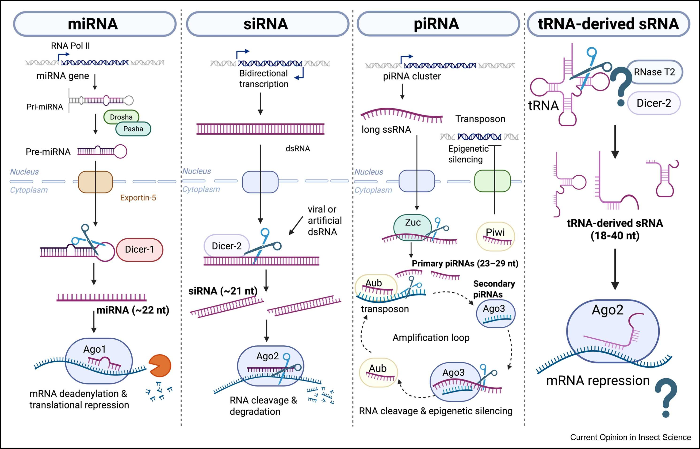

2026
Current Opinion in Insect Science
RESEARCH
We investigate small RNA pathways in insects, from microRNA regulation of physiology to the processing of siRNAs after dsRNA delivery.
Research on the cabbage stem flea beetle examines the role of the microRNA pathway in obligatory aestivation. Current preprints investigate RISC-bound siRNAs, guide-strand selection, trimming and tailing, and the detection of dsRNA-derived siRNAs in the central nervous system.

Published overview of microRNA, siRNA, piRNA and tRNA-derived small RNA pathways. Question marks indicate unresolved steps. Original figure reproduced without modification.
Current Opinion in Insect Science